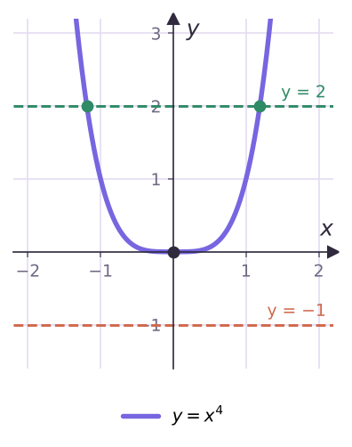
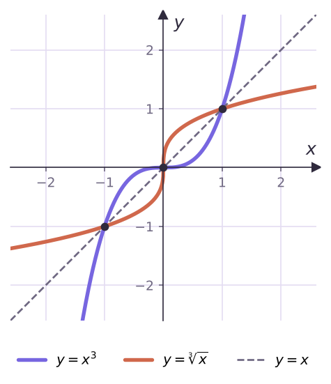
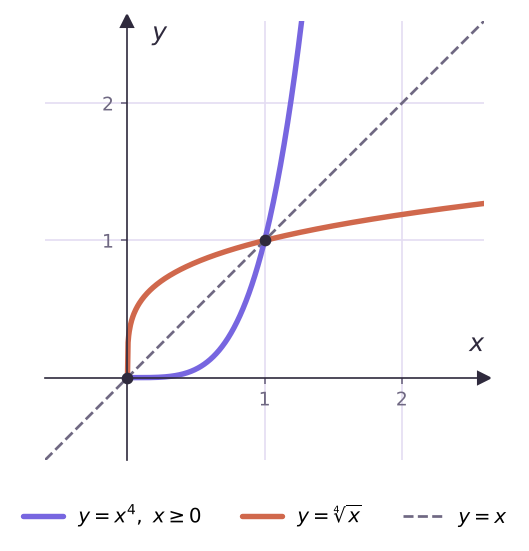

Теория
Корень n-й степени
Квадратный корень из числа a — это число, квадрат которого равен a. Так же определяют корень любой степени.
Корнем n-й степени из числа a, где n ∈ N, n > 1, называют число, n-я степень которого равна a.
Корень пятой степени из 32 — число 2, так как 2⁵ = 32. Корень третьей степени из −64 — число −4: (−4)³ = −64. А корней четвёртой степени из 81 два: 3 и −3, ведь 3⁴ = (−3)⁴ = 81. Получается, что искать корни n-й степени из a — то же самое, что решать уравнение xn = a.

- n нечётное. Функция y = xn возрастает и принимает все значения, поэтому корень n-й степени из любого числа существует и единственный. Его обозначают n√a: 5√32 = 2, 3√(−64) = −4, 7√0 = 0.
- n чётное. При a < 0 корня нет, при a = 0 он один — 0, при a > 0 их два, противоположных.
Арифметическим корнем n-й степени из неотрицательного числа a называют неотрицательное число, n-я степень которого равна a. Обозначение: n√a.
4√81 = 3, так как 3 ≥ 0 и 3⁴ = 81; 6√64 = 2; 10√0 = 0. Знак n√ называют радикалом, выражение под ним — подкоренным. Корень третьей степени называют кубическим.
Обрати внимание на договорённость: запись n√a при нечётном n означает единственный корень из любого числа, а при чётном n — только арифметический корень из a ≥ 0. Отрицательный корень чётной степени отдельного обозначения не имеет — его пишут как −n√a.
4√16 = 2, а не ±2: знак корня чётной степени — всегда неотрицательное число. Запись 4√(−16) смысла не имеет, а 3√(−8) = −2 — имеет.
Уравнение xⁿ = a
| a < 0 | a = 0 | a > 0 | |
|---|---|---|---|
| n нечётное | x = n√a | x = 0 | x = n√a |
| n чётное | корней нет | x = 0 | x = ±n√a |
Из определения сразу следуют полезные равенства: (n√a)n = a (для чётного n — при a ≥ 0) и n√(−a) = −n√a для нечётного n. Например, 3√(−2) = −3√2.
Функция y = ⁿ√x
Для нечётного n функция y = n√x — обратная к y = xn на R. Для чётного n — обратная к y = xn, рассматриваемой на [0; +∞). Поэтому её график получают отражением в прямой y = x (теорема 7.2).


| Свойство | n — чётное | n — нечётное |
|---|---|---|
| Область определения | [0; +∞) | R |
| Область значений | [0; +∞) | R |
| Нули | x = 0 | x = 0 |
| Знак | y > 0 на (0; +∞) | y < 0 на (−∞; 0), y > 0 на (0; +∞) |
| Чётность | ни чётная, ни нечётная | нечётная |
| Монотонность | возрастает | возрастает |
Разбор примеров
Вычисли: 4√81; 3√(−125); 5√(−1/32); (7√5)⁷; 3√(−0,008).
4√81 = 3 (3⁴ = 81); 3√(−125) = −5; 5√(−1/32) = −1/2; (7√5)⁷ = 5; 3√(−0,008) = −0,2, так как 0,2³ = 0,008.
Реши: а) x⁴ = 5; б) x³ = −27; в) x⁶ = −1; г) 4√x = −2; д) 3√x = −2.
а) x = ±4√5; б) x = −3; в) корней нет; г) корней нет — арифметический корень не бывает отрицательным; д) возведём в куб: x = −8.
Найди область определения: а) y = 4√(x − 1); б) y = 3√(x − 1); в) y = 6√(x² − 9).
а) Корень чётной степени: x − 1 ≥ 0, [1; +∞). б) Корень нечётной степени определён всегда: R. в) x² − 9 ≥ 0: (−∞; −3] ∪ [3; +∞).
Между какими соседними целыми числами лежит 3√30?
3³ = 27 < 30 < 64 = 4³, а функция 3√x возрастает, поэтому 3 < 3√30 < 4.
Реши неравенства: а) 4√(x − 2) < 1; б) 6√(x² − 4) > 6√(3x); в) 3√(x² − 4) > 3√(3x).
а) Функция 4√t возрастает и определена при t ≥ 0, поэтому неравенство равносильно системе 0 ≤ x − 2 < 1: [2; 3).
б) Обе части должны существовать, а большее подкоренное выражение даёт больший корень: x² − 4 > 3x и 3x ≥ 0. Первое: x < −1 или x > 4; со вторым — (4; +∞).
в) Кубический корень определён везде и возрастает: просто x² − 4 > 3x, (−∞; −1) ∪ (4; +∞).
Задачи урока
Реши в тетради. Ответы разберём на занятии.
Из учебника
- № 11.1, 11.3 — Вычисление корней n-й степени.
- № 11.5, 11.7 — Область определения и область значений.
- № 11.9 — Между какими целыми числами лежит корень.
- № 11.11 — Уравнения xⁿ = a и ⁿ√x = a.
- № 11.22 — Неравенства с корнем.
Тест к уроку
Домашнее задание
№ 11.2, 11.6, 11.10, 11.12, 11.23 (1, 2) из учебника письменно. Построить в одной системе координат y = x³, y = ∛x и прямую y = x.